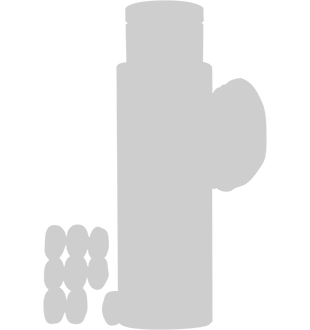

Сила природы… Для
Clarins это не пустые слова!
Косметические средства французского бренда вобрали в себя пользу уникальных природных компонентов, чтобы подарить вашей коже самый лучший уход.
Как много вы знаете о свойствах природных ингредиентов?
Пройдите наш тест и откройте для себя мир растений, которые делают косметику Clarins по-настоящему эффективной.
В конце теста вас ждет
приятный бонус: 2 книги от ЛитРес и уникальный промокод c -40% на заказ на Clarins.ru c миниатюрами в подарок и бесплатной доставкой.
-
Польза природы из Центральной Америки
Плоды авокадо называют источником полезных веществ, которые способствуют преображению кожи. Каким полезным для кожи свойством обладает авокадо?
ДалееИ это далеко не все свойства! Пептиды авокадо стимулируют синтез коллагена, что придаёт коже упругость и обеспечивает антивозрастной эффект. А органическое масло авокадо помогает смягчить кожу. Познакомьтесь с бест-селлером Clarins — двойной омолаживающей сывороткой Double Serum, в ее состав как раз входит авокадо. -
Секрет красоты – увлажнение
Чтобы поддерживать здоровье и молодость кожи, её необходимо питать и увлажнять. Какой из этих ингредиентов активно борется с обезвоживанием кожи?
ДалееДействительно, лесной орех ценится как источник питательного масла, которое насыщает кожу влагой, смягчает её и помогает восстановить нормальный баланс жирности. Конечно, благодаря этому свойству масло лесного ореха входит в состав интенсивно увлажняющих кремов и масел, таких как масло для обезвоженной кожи Orchidée Bleue. -
Источник энергии
Экстракт зелёного кофе незаменим в косметике благодаря своим тонизирующим и антиоксидантным свойствам. Догадаетесь, из какой именно части кофейного куста его добывают?
ДалееВерно. Чтобы сохранить антиоксидантные свойства экстракта, зёрна высушивают на солнце и потом очень быстро обжаривают. Кроме того, экстракт зелёного кофе известен благодаря стимулирующему и омолаживающему эффекту на коже, а также он улучшает циркуляцию жидкости. И поэтому он прекрасно работает как активный компонент антицеллюлитной косметики, такой как гель-крем Body Fit с лифтинг-эффектом. -
Ягода красоты
Какое счастье, что исключительной пользой малины в составе косметических средств можно наслаждаться круглый год. Знаете ли вы, какие части куста малины используют в производстве косметики?
ДалееЯгоды малины богаты флавоноидами, глюкозой и фруктовыми кислотами. Благодаря такому составу их экстракт увлажняет кожу и является прекрасным антиоксидантом. А из косточек добывают увлажняющее и питательное масло, которое смягчает и восстанавливает кожу. Разве может быть что-то полезнее для наших нежных губ? Убедитесь в эффективности малины на примере масла для губ Lip Comfort Oil. -
Ещё больше увлажнения!
Известно, что содержание воды в теле человека в среднем составляет 70%. Именно поэтому увлажнение так необходимо нам для красоты и здоровья. Как думаете, на сколько процентов из воды состоит арбуз?
ДалееНаша кожа постоянно подвергается агрессивному воздействию солнца, ветра, пыли и других внешних факторов, и потому часто страдает от недостатка жизненно необходимой влаги. Благодаря высокому содержанию воды экстракт арбуза – это настоящее sos-средство в таких случаях! Поэтому косметика с экстрактом арбуза эффективно увлажняет кожу (а ещё прекрасно пахнет). Например, этот ценный ингредиент используется в составе средств после загара от Clarins, освежающем геле Gelée Rafraîchissante Après Soleil и успокаивающем бальзаме Baume Apaisant Après Soleil, которые помогут восстановить естественный водный баланс кожи. -
(Кокос – вариант 1) Эликсир жизни для вашей кожи
Дерево, растущее в Индонезии, дарит косметическим средствам ещё один великолепный увлажняющий и питательный компонент, который очень близок по составу к плазме крови человека. Что это?
ДалееДа, так и есть. Кокосовая вода насыщает клетки кожи питательными компонентами. А ещё из мякоти кокоса получают питательное масло, которое обладает защитным действием. Познакомьтесь с линией средств для молодой кожи с органической кокосовой водой в ее составе. -
МАНГО
Экзотическое дерево манго, растущее в Индии, дарит косметическим средствам два чрезвычайно полезных ингредиента: масло и экстракт манго. Знаете ли вы, из какой части манго получают масло?
ДалееВерно. Масло манго прекрасно увлажняет и питает кожу, но и обладает другими полезными свойствами: в составе косметики оно способствует регенерации клеток, замедляет старение кожи, насыщает её кислородом, делает кожу более гладкой и упругой. Оцените эффект масла манго в косметических средствах от Clarins на примере питательной маски для лица SOS Comfort.
Результат: 1|7
Поздравляем, вы действительно отлично разбираетесь в свойствах природных компонентов. Самое время ощутить их эффективность!
мы дарим вам уникальный промокод,
с которым вы получите в подарок миниатюру при заказе от 2000 рублей и -40% при заказе от 4000 рублей.
Заказ от 1000 рублей мы доставим бесплатно.
Подберите эффективный уход для заботы о вашей коже с Clarins!